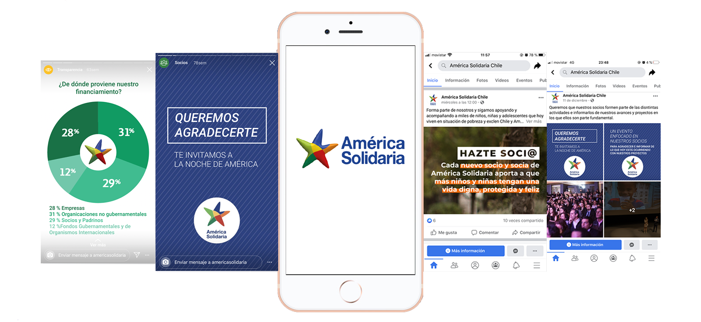

El Desafío
Actualmente se encuentran en proceso de escalar mediante un nuevo canal digital B2C y se ven enfrentados al desafío de mejorar disruptivamente la UX/UI del producto, de tal manera hay que generar una propuesta altamente atractiva y que cause la mejor de las primeras impresiones. A su vez, diseñar el sistema de gamificación en el curso actual.
🚀 El Proceso
Para llevar a cabo nuestro proyecto, realizamos una planificación basada en las etapas de design thinking y para organizarla utilizamos la herramienta Trello. Nuestro trabajo desglosado por sprints fue:
La Solución
...

Entrevista Cliente
Una etapa fundamental dentro del desarrollo del proyecto es conocer y empatizar con los distintos actores del proyecto. En primera instancia estuvimos en el lanzamiento del desafío con los stakeholders de Ninja Company y nos plantearon los requerimientos principales a tratar.
Testeos
Hicimos el ejercicio de realizar el curso, para poder encontrar desde la mirada UX posibles mejoras (Análisis Heurístico). Creamos una base de datos, a través un form de google.
Maze
Testeo remoto en Maze donde obtuvimos datos cuantitativos. Nuestra idea era revisar los flujos existentes dentro del sitio , para descubrir oportunidades de mejora.
🚀 Curso
Realizamos un testeo remoto del curso, solicitando que lo realizaran y posteriormente completaran una encuesta para conocer a nuestros usuarios y obtener datos cuantitativos e impresiones que fueron puntos muy importantes a considerar en la propuesta.
Benchmark
Realizamos un Benchmark Directo para buscar referentes en otros sitios educativos, que ofrecieran cursos en Excel , para ayudarnos a identificar fortalezas que podamos implementar en Ninja Co. Y un Benchmark funcional , para rescatar ideas y conceptos para desarrollar la Gamificación del curso
Mapa de Afinidad
Con toda la información que recopilamos hasta el momento ( test de maze, test de satisfacción del curso de excel y evaluación heurística) , hicimos una bajada de todos los aprendizajes y los agrupamos por temáticas. Gracias a este ejercicio logramos obtener tres grupos: Usabilidad, Diseño Visual y Gamificación . De los cuales sacamos los principales hallazgos.
User Persona
A través de la encuesta de satisfacción y el testeo de la plataforma del curso, detectamos las necesidades de los usuarios en cuanto a usabilidad, diseño y contenido. Es por esto que utilizamos esta herramienta para unificar sus objetivos e inquietudes.

Costumer Journey Map
El Customer Journey Map es una herramienta de Design Thinking que permite plasmar visualmente las etapas, canales, interacciones y puntos de conexión con el usuario a lo largo de un proceso , para así identificar los puntos de de dolor , en base a ellos crear a través del problema , oportunidades de mejora. Para hacer este recorrido , usamos Felipe ( user persona) , pues resume perfectamente las necesidades del usuario del curso de Excel.
Gamificación
Uno de los puntos más importantes de este proyecto era desarrollar un sistema de gamificación para el curso. Para ello hicimos un análisis del usuario, entendiendo sus objetivos y metas de aprendizaje , creando la siguiente propuesta:
Objetivo
Tipo de jugador
Triunfador (Achiever)
El triunfador es el usuario cuya meta principal es lograr superar los objetivos marcados en el juego. A este tipo de jugador se les retiene con la definición de un sistema de hitos y logros. Es un jugador aventurero que jugará con el afán de descubrir nuevos escenarios y plataformas.
🚀 Explorador (explorer)
Es aquel jugador que disfruta de la actividad en sí misma. Les gusta saber más, descubrir lo desconocido. Se les retiene mediante el establecimiento de logros más complejos. Estableciendo niveles que puedan ir pasando y que les proporcionen afán de superación.
Eje motivacional (intrínseca)
Tipo de diversión
Serious fun (Significado / propósito)
Modelo MDA (Mechanics, Dynamics and Aesthetics)
Mecánicas
Dinámicas
Estética
...
Personajes de Upgrade
En la medida que el usuario vaya avanzando en las unidades, se irán desbloqueando los Shurikens, una vez que los haya desbloqueado todos el ninja se desbloqueará. De esta forma el usuario va viendo el aumento de su aprendizaje.
Sitemap
Realizamos un Sitemap con los contenidos del curso, porque debíamos visualizar toda la información que íbamos a implementar en el rediseño del complemento.
Wireframe
Para comprobar si nuestras propuestas se validaron en aspectos de usabilidad y diseño visual propusimos varias alternativas para ir solucionando las oportunidades de mejora detectadas. Para complementar las pantallas base que debíamos desarrollar agregamos elementos e interacciones que facilitarán aún más esos flujos.

— Propuesta 1 Visibilización
Por ejemplo, agregamos un menú de hamburguesa en el costado superior izquierdo para tener acceso en todo momento a un menú en cualquier parte del complemento.
— Propuesta 2 Contenido de socios
También agregamos una barra de progreso visible en todas las pantallas que tengan misiones por cumplir, de esta forma estaríamos solucionando uno de los puntos principales que destacaron los usuarios cuando interactuaron con el curso.
— Propuesta 3 Transparencia
Por otro lado, diseñamos todo el complemento considerando no hacer scroll, la idea es que el usuario siempre tenga visible todos los elementos que tiene disponible para interactuar generando menos distracciones en los objetivos que debe ir realizando.
Wireflow
Realizamos un Wireflow que es una herramienta que nos permite crear un diagrama de los flujos de las interacciones del complemento propuesto.
Prototipado
En esta etapa comenzamos con las propuestas gráficas finales, para tomar las decisiones nos basamos en referentes de buenas prácticas de aplicaciones móviles y usamos la paleta de color que caracteriza a Ninja Co., considerando siempre que el complemento tuviera una línea visual relacionada con el sitio web que actualmente están desarrollando.
— Propuesta 1 Visibilización
Decidimos mantener la ilustración base y complementar con detalles, siempre manteniendo la identidad de Ninja Co.
— Propuesta 2 Contenido de socios
Propusimos iconos e interacciones patterns, que ya están internalizadas en los usuarios digitales, la idea es evitar que pierdan el foco de los objetivos del curso y todo lo que puedan obtener de él.
Guia de estilos
Además, realizamos una guía de estilos para determinar cuáles serían los elementos que se usarían en el desarrollo del proyecto.